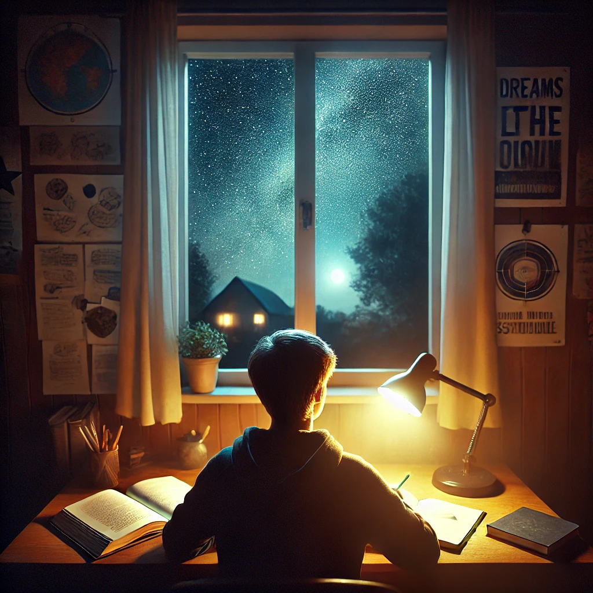
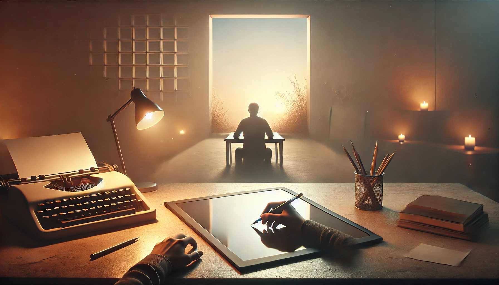
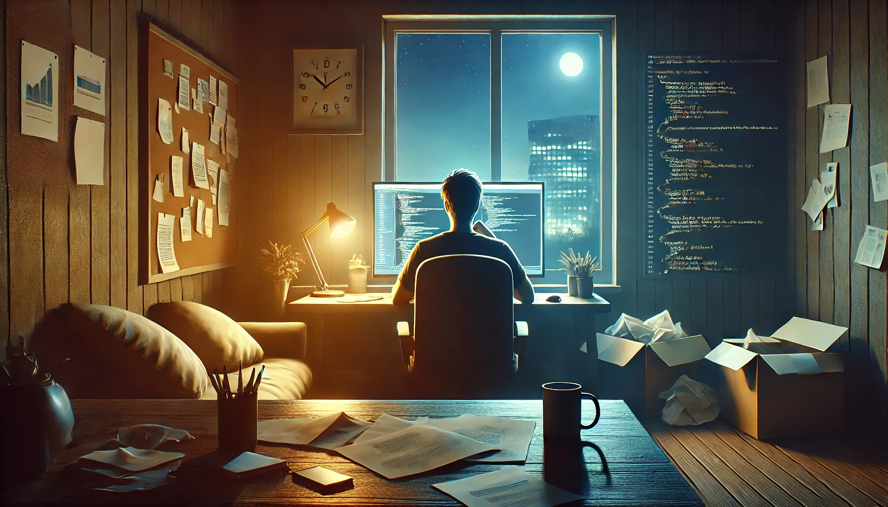
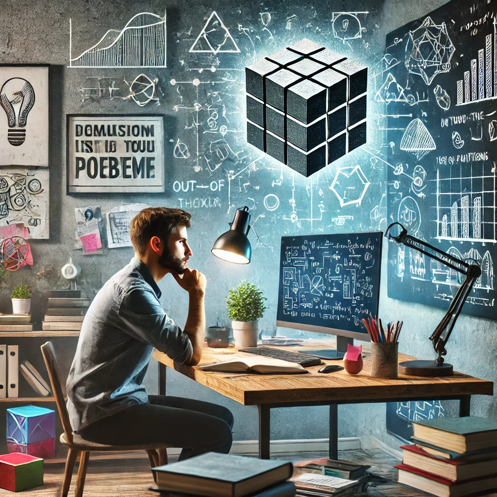
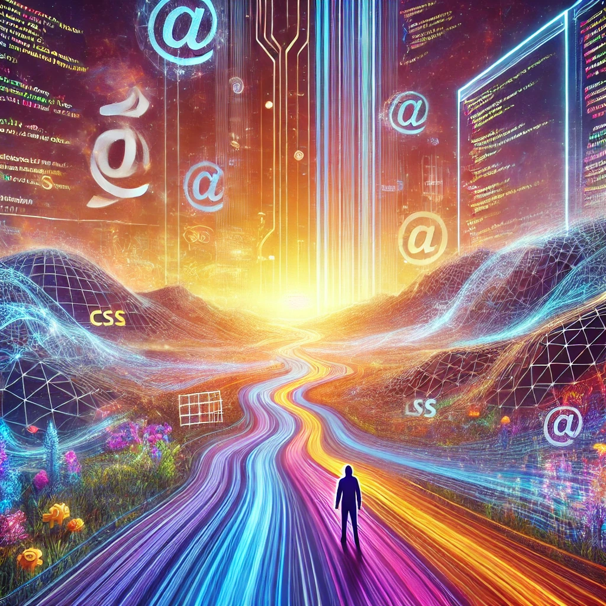

-
Фритрек и нулевой спринт: Подготовка к работе
 </HTML>Это было самое начало пути. На этом этапе важно было проникнуться основами и настроиться на учёбу. И, возможно, подумать, как новые знания могут повлиять на ваше будущее.
Это было время начала пути — момент, когда ты только погружаешься в новые горизонты знаний. Я помню, как впервые ощутил это трепетное волнение перед неизвестностью: осознание, что передо мной открываются бесконечные возможности.
-
1 спринт: Я — чистый лист
 </HTML>На первых этапах мы работали со страхами и сомнениями, которые часто испытывают новички. Один из них — страх перед чистым листом. Это, конечно же, намного сложнее, чем боязнь куска бумаги. Часто за этим ощущением скрываются более глубокие вопросы: с чего начать? а вдруг будет слишком сложно? что, если я не справлюсь?
На первых этапах, когда я только начинал, страх перед чистым листом казался чем-то почти осязаемым. Это был не просто страх перед пустотой, а скорее перед неизвестностью, которая за ней скрывалась. Казалось, что этот лист — символ всех возможных ошибок, которые я мог допустить.
-
1 спринт: А если не получится?
 <CSS>Первый проект — позади! Но это всё ещё самое начало пути. Радость могла быстро померкнуть и смениться ожиданием провала. Или вы, наоборот, могли вдохновиться успехами и поверить в себя.
Первый проект... В тот момент это казалось вершиной достижений. Я помню чувство радости, когда всё наконец заработало: строки кода, которые сначала были хаотичным набором символов, вдруг сложились в работающую программу. Это был миг гордости, словно доказательство, что я могу.
-
2 спринт: Погоня за идеалом
<desigions>На этом этапе вы уже достаточно разбирались в основах вёрстки, чтобы понять, как много ещё впереди. Вы могли попытаться погнаться за идеалом и понять, что он недостижим. А, может, вы вовсе и не подвержены перфекционизму и вместо того, чтобы сделать идеально, старались просто сделать.
На этом этапе я начал чувствовать, что основы верстки больше не пугают. Но с этим пришло осознание: чем больше я узнавал, тем яснее становилось, сколько ещё нужно освоить. Был соблазн угнаться за идеалом — чтобы каждая строка кода была безупречной, каждая деталь на экране выровнена до пикселя. Я пробовал. И быстро понял, что идеал — это горизонт, к которому можно стремиться, но достичь его полностью невозможно. Это открыло мне важную истину: лучшее враг хорошего. Я учился делать просто хорошо, сосредотачиваться на задаче, а не на совершенстве.
-
2 спринт: О тех, кто рядом
<care>Всё это время вы были не одиноки (хотя, возможно, иногда и чувствовали, что одни против целого мира). Вас окружали одногруппники, команда сопровождения и просто близкие люди, которым можно пожаловаться, если очередной макет просто так не поддавался. Осваивать что-то новое легче, когда рядом есть единомышленники, не правда ли?
Вокруг всегда находились те, кто разделял со мной этот путь: одногруппники, готовые помочь с трудным кодом, коллеги, предлагающие свежий взгляд на проблему, или близкие люди, выслушивающие ваши жалобы на упрямый макет. Осознавать, что я не одинок, всегда придавало сил продолжать двигаться вперёд.
-
3 спринт: Обходные стратегии
 <support>На этом курсе вы постоянно решали разные задачи. В какой-то момент вам могло показаться, что решения просто иссякли. Значит, пришло время посмотреть на задачу под другим углом..
Решая сложную задачу, я чувствовал себя у стенки. В такие минуты словно брал паузу, чтобы взглянуть на ситуацию иначе. Может, я переключался на что-то другое, обсуждал проблему с одногруппниками, а иногда просто смотрел на неё под другим углом. И тогда, как по волшебству, решение начинало вырисовываться.
-
3 спринт: Когда опускаются руки
<lifes-style: none;>Во время учёбы часто возникает чувство, когда не знаешь, за что хвататься. Вроде и проектную пора сдавать, и задачи хочется порешать, и в теории получше разобраться, и жизнь не забыть пожить. В такие моменты очень нужна концентрация. Вспомните, откуда вы её черпали.
Вспоминается, как в учебные времена было непросто совмещать всё: проектную работу, ежедневные задачи, теорию, которую так хотелось понять глубже, и простую человеческую жизнь. Концентрацию находил в маленьких ритуалах: чашка кофе на утреннем солнце, расстановка приоритетов с помощью списка дел, короткие прогулки, чтобы перезагрузить мозг. Порой помогали даже простые напоминания о том, ради чего всё это — интерес, стремление стать лучше, и радость от маленьких побед.
-
«Сейчас я здесь»
 <experience>Сейчас вы уже очень много знаете о вёрстке. Но это только начало. Во-первых, впереди ещё много материала про «красотищу». Во-вторых, с окончанием курса учёба не заканчивается. Вёрстка — это целый мир. И этот мир постоянно меняется. Познать его полностью не получится, но это тот случай, когда важен сам процесс познания. Ведь часто путь — и есть результат.
Вспоминаются первые шаги в освоении вёрстки, когда каждый новый урок открывал передо мной мир возможностей. Простая структура HTML, первые стили CSS, и это волшебное чувство, когда страница оживает. Но со временем приходило понимание: учёба никогда не заканчивается. Вёрстка постоянно меняется, добавляются новые технологии и подходы. Этот процесс — словно путешествие без конца, где важно наслаждаться самим движением, а не только конечными целями.